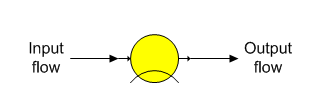
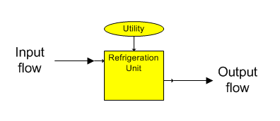

Cooler stations are used to remove heat and/or condense water vapor in a flow stream. The heat loss can be due to radiation and/or convection, or a separate cooling (refrigeration) unit.
Cooler The general shape for a cooler station is shown below with identification of the input and output flows. A cooler station is used to remove energy from a flow stream and can account for unknown losses in a process.

Refrigeration Unit The shape for a refrigeration station is shown below with identification of the input and output flows. A refrigeration unit is a cooler station that is used to remove heat from a flow stream. No consideration is given to the utility needs of the unit.

General Features Cooler stations are used to account for unknown heat losses in process equipment such as tanks, pipelines, etc. A cooler station can be used for a cooling tower (when no consideration is given to the use of cooling water), refrigeration unit, or other equipment heat losses. Input data for a cooler station is used to cool a flow stream by a drop in temperature or to a specified output temperature, or by a percent heat loss or a specified heat (kJ/kg, or BTU/lb) loss. A phase change is considered for the liquid-vapor phase if the flow stream contains vapor - even if all input parameters are zero. Sucrose crystal growth isn’t allowed (i.e., the same weight of crystals will be contained in the output flow) and all other flow stream components remain the same. The output flow may be supersaturated because crystal growth isn’t considered if the input flow stream contains sucrose crystals, or if conditions are such that crystals could grow at the cooled temperature of the output flow.
Only a temperature drop and condensing of vapor can occur in a cooler station. If a heat loss is specified for a saturated vapor, the temperature may not change if the heat loss is less than the latent heat, but condensation will occur and the output flow will contain both condensate and vapor.